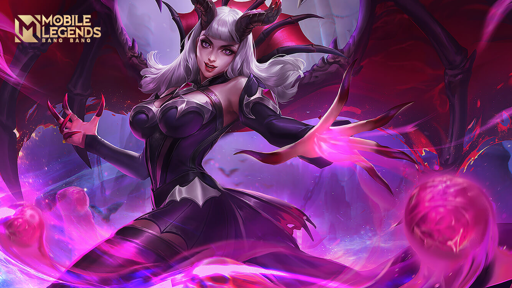

ALICE
QUEEN OF THE APOCALYPSE
QUEEN OF THE APOCALYPSE
Whats your back!
"Di awal Era of Strife, umat manusia merupakan ras yang baru dan lemah di Land of Dawn. Mereka bekerja di seluruh penjuru dunia dan menciptakan sejarah mereka sendiri.
Mereka adalah makhluk yang baik sekaligus jahat; mereka dapat mengorbankan hidup mereka demi keadilan, tetapi juga dapat mengkhianati temannya untuk keinginan mereka sendiri; mereka sendiri adalah gabungan dari cahaya dan kegelapan. Potensi yang terkandung di dalam umat manusia telah ditemukan oleh golongan cahaya dan kegelapan. Untuk memperebutkan kepercayaan manusia, Endless War pecah untuk yang kedua kalinya.
Setelah perkembangan selama lebih dari satu abad, ketika Brand masih merupakan seorang kepala keluarga dari keluarga Antalus, mereka menjadi salah satu keluarga yang paling berkuasa dan kaya dari seluruh umat manusia.
Alice adalah anak perempuan bungsu Brun, tetapi dibandingkan dengan kedua kakak laki-lakinya yang hebat, Alice kecil terlihat tidak penting. Identitasnya sebagai seorang anak yang tidak sah membutakannya dan dia tidak pernah dihargai oleh keluarganya.
Alice perlahan-lahan tumbuh di lingkungan yang jahat ini. Dia membenci semua orang di sekitarnya, membenci takdir yang tidak adil ini, membenci ""dewa munafik"" yang dipercayai oleh keluarganya, dan kegelapan tersebut terus menyebar di dalam hatinya.
Suatu hari, para prajurit yang kembali dari medan perang berkelahi untuk merebut hasil jarahan dan membaginya seperti biasa. Alice berdiri di suatu pojokan yang tidak jauh, melihat mereka dengan tatapan dingin
""Mengapa kalian membawa kembali sampah seperti ini? Benda ini sangat merusak pandanganku."" Seseorang berkata demikian sambil melemparkan sebuah manik ke tanah. Alice melihat ke arah benda tersebut, tetapi tanpa disangka, manik ini, yang tampak redup dan kusam untuk orang lain, bercahaya dengan warna merah mawar di mata Alice. manik tersebut bergulir perlahan ke arah kaki Alice, dan saat dia menyentuhnya dengan tangannya, suatu suara iblis memenuhi pikirannya.
""Serahkan jiwamu, Alice. Terima kekuatan kami dan kamu akan memperoleh semua yang kamu inginkan.""
""Jika aku memperoleh semua yang aku inginkan, apa yang kau inginkan dariku?""
""Sangat sederhana. Yang kubutuhkan hanyalah keyakinan dan kepercayaan keluargamu. Tinggalkan Lord of Light dan terjun ke dalam Abyss.""
Kepercayaan bukanlah masalah besar untuk Alice, tetapi dia mengingat janji yang selalu akan dia utarakan setiap kali dia memberikan persembahan: cahaya suci yang tidak pernah padam akan menghukum seluruh pengkhianat.
Tidak ada yang mengetahui apa hukuman tersebut. Ketika Alice meragukan dirinya, kakak Alice, Simon menemukannya di pojokan. Dia mendatangi Alice dan mendorongnya hingga jatuh dengan kasar, sambil berkata: ""Kau, kau orang yang tidak berguna... Apa yang sedang kau lakukan di sini?""
Melihat bahwa Alice tidak akan menjawabnya, dia mengambil manik yang sedang digenggamnya dengan erat. Alice berusaha merebutnya kembali, tetapi dia menendangnya ke udara, ""Seorang anak tidak sah tetaplah seorang anak tidak sah, tetapi sebuah manik yang rusah dapat dianggap sebagai harta karun."" Dia melihat kembali ke arah Alice, yang telah jatuh ke tanah dan tidak bangkit lagi, dia mendengus dengan kasar, dan melanjutkan, ""Kau sama seperti benda ini - sampah yang tak berguna.""
Dia melemparkan manik dengan keras ke arah perut Alice. Rasa sakit yang dirasakan Alice membuat Alice berteriak dengan suara yang mengerikan. Suara dari pojokan itu menarik perhatian semua orang di sekitar. Gelak tawa memenuhi ruangan itu untuk beberapa waktu, dan Alice merasa seperti kehabisa nafas.
Ketika suara tersebut memudar, seluruh penghinaan dan frustrasi akhirnya terlepas pada saat ini. Dia berkata pada iblis itu: ""Jika aku berhasil, apakah engkau akan memberikanku cukup kekuatan untuk menghabisi seluruh nyawa manusia?""
""Tentu saja, Alice.""
""Baiklah, maka aku berjanji kepadamu.""
""Bagus sekali, Alice, hahahaha....""
Suatu energi yang berpendar menciptakan suatu tanda hitam di belakang tangan Alice, dan kemudian menghilang. Dia menyimpan manik tersebut dan pergi dengan diam-diam.
Brun sudah lanjut usia, tetapi penerus keluarga Antalus belum juga dipilih. Dari kedua anak laki-lakinya, Simon yang lebih muda adalah sosok yang lebih disukainya, dan anak tertuanya Colin kecewa atas keputusan ini. Alice mengetahui bahwa ini adalah cara terbaiknya untuk menyusup.
Alice diam-diam memprovokasi kebencian di antara kedua kakak-beradik ini, dan menggunakan ini untuk memisahkan seluruh anggota suku menjadi dua pihak yang terus bertarung. Di waktu ini, Alice selalu tinggal di sisi Brun, bermain peran sebagai anak perempuan yang baik sementara memberi tahu Brun bahwa kedua anaknya ingin membunuhnya dan merebut kedudukannya sebagai kepala keluarga.
Tanpa banyak usaha dari Alice, hubungan keluarga antara seorang ayah dan kedua anak laki-lakinya dihancurkan dalam suatu perebutan kekuasaan. Sementara hubungan mereka semakin meretak, suatu tragedi akhirnya terjadi: Colin berhasil membunuh Simon, dan Brun mengeksekuasi Colin di bawah pengaruh jahat dari Alice.
Setelah Colin meninggal, Brun jatuh sakit, dan Alice memutuskan untuk mengambil tanggung jawab kepala keluarga. Pada waktu ini, keluarga tersebut telah hancur. Di satu sisi, Alice menjaga Brun, dan di sisi lain, dia terus menghibur keluarganya dan memperoleh dukungan serta kepercayaan sukunya. Melihat bahwa waktu yang tepat telah tiba, dia diam-diam meracuni Brun dan membunuhnya.
Di pemakamannya, anggota keluarga Antalus menyadari bahwa keluarga mereka telah bertarung untuk Lord of Light selama banyak generasi, tetapi dia tidak pernah memberkati mereka. Hari demi hari, semakin banyak sekutu meninggalkan mereka, tidak mempedulikan sedikit pun persahabatan di masa lalu. Mereka marah, tetapi tidak dapat melakukan apa-apa mengenai hal ini. Dipengaruhi oleh Alice, mereka mendatangi altar, melemparkan benda-benda suci ke tanah dengan marah, dan membalas Lord of Light dengan perbuatan mereka sendiri.
Di saat di mana benda-benda suci tersebut dihancurkan, suatu cahaya yang sangat terang turun dari langit di atas altar tersebut, menembus tubuh dari seluruh anggota suku tersebut, termasuk Alice. Di tengah raungan mereka, sayap berwarna hitam legam bercampur dengan darah tumbuh dari badan mereka, dan taring yang tajam tumbuh dari mulut mereka. Ini adalah hukuman yang disebutkan dalam sumpah tersebut, kutukan yang tidak dapat dihapus. Mulai dari saat itu, mereka akan menjadi monster yang tidak pernah melihat matahari lagi.
Setelah cahaya itu pudar, tangan-tangan iblis yang bersimbah darah muncul dari permukaan tanah. Dengan menyentuh mereka, anggota keluarga Antalus diberikan hadiah yang dinamakan ""Eternal Life"" oleh Abyss. Alice juga menerima hadiah dari iblis tersebut pada saat ini - kekuatan yang dapat mengambil seluruh nyawa.
Ketika semuanya pudar, mereka menyadari bahwa mereka telah jatuh ke lubang di antara cahaya dan kegelapan dan tidak akan lagi diterima oleh dunia. Di bawah bimbingan iblis tersebut, Alice memimpin sukunya untuk menyembah dan mengikuti Lord of the Abyss. Setelah itu, keluarga Antalus hilang dari dunia untuk selamanya. Di golongan iblis, terdapat ras tambahan yang disebut Blood Demon. Di bawah kepimpinan Ratu Alice, mereka berkeliaran dalam kegelapan dan menjadi pelayan Abyss yang paling setia."